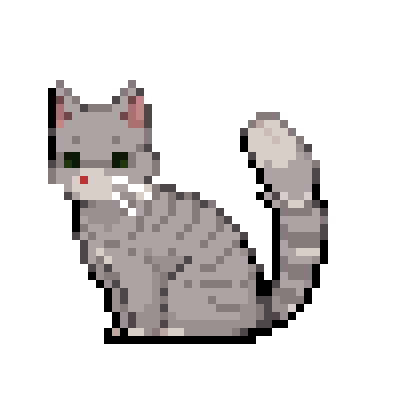

Me (left), Pico (right)
Hello! I'm Eddie. Welcome to my "about" page!
I've been working with HTML and CSS since August of 2021, and JS since October 2021. I especially enjoy playing around with CSS animations, and responsive page design. Figuring out creative solutions to problems is a lot of fun, I enjoy the challenge.
I live alone with my cat Pico. Most of my day is spent drawing, animating, or gaming. I run a few creative hobby projects on the side, which involves communicating with other artists, writers, and community members from all across the globe.
I'm always happy to learn new things, and utilizing my skills in creative ways. I pick up new things relatively quick, but especially if I am able to play around with it.

Pico, animated.